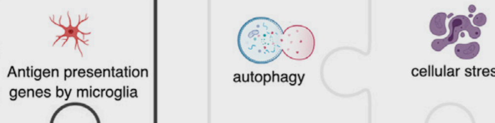
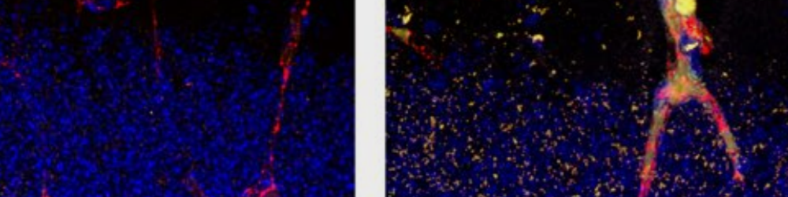
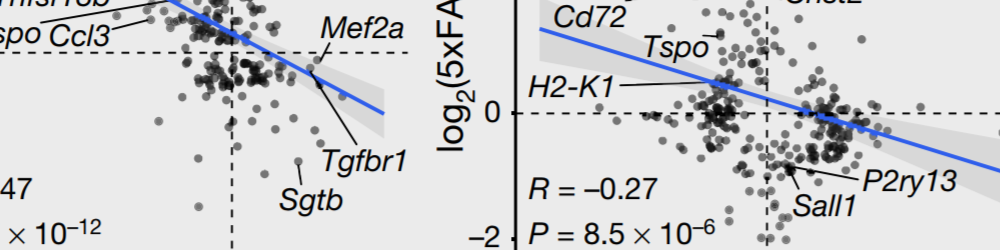

Welcome to the Wyss-Coray Lab
The Wyss-Coray research team studies brain aging and neurodegeneration with a focus on age-related cognitive decline and Alzheimer’s disease. The lab is part of the Glenn Center for Aging at Stanford, the Stanford Neurosciences Institute’s Brain Rejuvenation Project, The NIH Alzheimer’s Disease Research Center, and it is funded by the Department of Veterans Affairs, the National Institute on Aging, the Cure Alzheimer’s Fund, and the NOMIS Foundation.
Resources

An 80,000-Piece Puzzle of Alzheimer’s Disease, Iram et al., Cell

Aged blood impairs hippocampal neural precursor activity and activates microglia via brain endothelial cell VCAM1, Yousef et al., Nature Medicine

CD22 blockade restores homeostatic microglial phagocytosis in ageing brains, Pluvinage et al., Nature
Recent publications
An 80,000-Piece Puzzle of Alzheimer’s Disease, Iram et al., Cell
Aged blood impairs hippocampal neural precursor activity and activates microglia via brain endothelial cell VCAM1, Yousef et al., Nature Medicine
CD22 blockade restores homeostatic microglial phagocytosis in ageing brains, Pluvinage et al., Nature